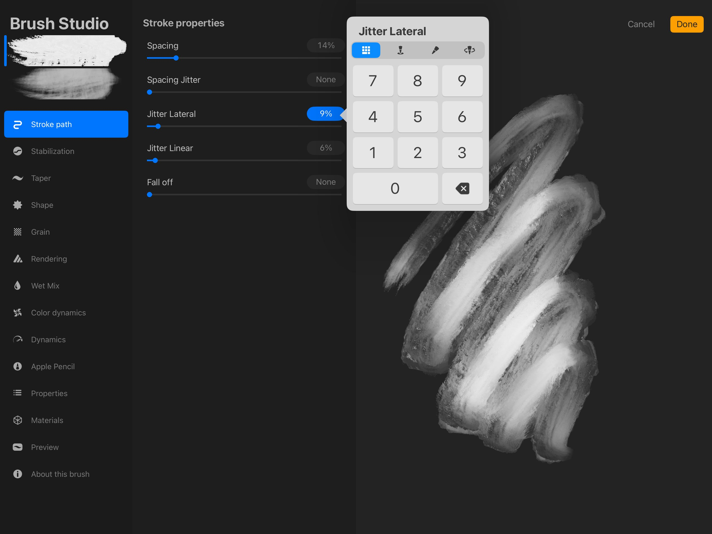
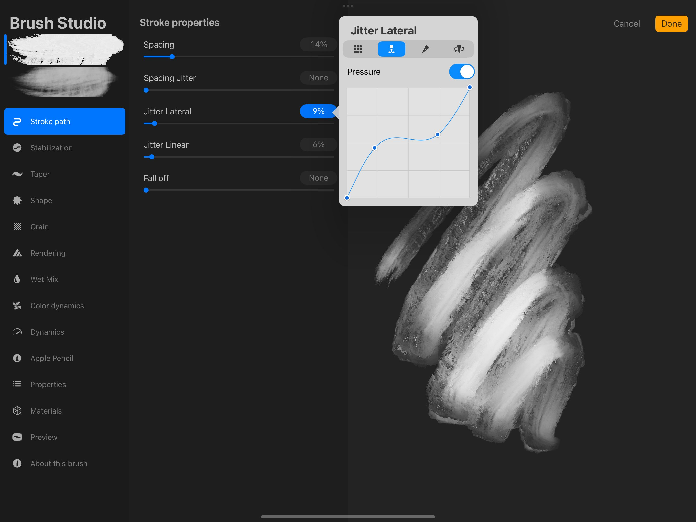
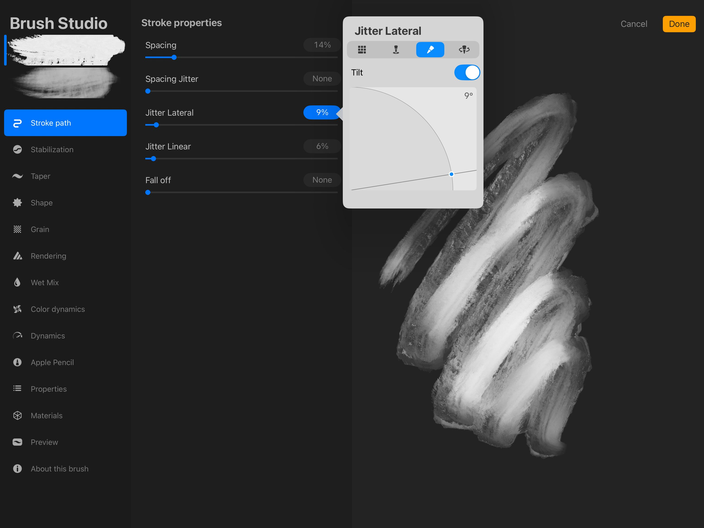

📖 Nội dung bên dưới là bản gốc tiếng Anh (chưa dịch). Ảnh đã cache offline.
Brush Studio
The Brush Studio guarantees your brushes will be as unique as your art with its breathtaking range of customization options.
Overview
Brush Studio offers Settings for existing brushes along with the ability to create your own brand-new brushes. Tweak the basics or dive deep to discover a versatile range of effects.
There are two ways to approach Brush Studio. You can dive in knowing what you want to create and adjust settings until you reach your goal. Or you can play, using experimentation, serendipity and exploration to build something that feels good.
Tap the Paint, Smudge or Erase button to open up Brushes, then tap the + button in the top right, followed by 'create new brush' to enter the Brush Studio.
Pro Tip
You can enter the Brush Studio to edit a brush, too. Just tap once on a brush to select it, then tap again to enter the Brush Studio and edit your brush. Be sure to tap 'Done' in the top right to save any changes, or Cancel to dismiss them.
Interface
The Brush Studio interface divides into three parts: Attributes, Settings, and Drawing Pad.
Tap any attribute in the left-hand menu to tweak settings for that attribute. You can see the result update live in the Drawing Pad.
Each of the 14 aspects of your brush are adjustable with a wide range of settings.
The leftmost menu in Brush Studio displays the 14 attributes you can modify to make your brush unique.
You can adjust the shape and grain of your brushes, tweak the appearance of your brush Stroke Path, and adjust how Procreate renders the end result. Play with Dynamics to set how your brush responds to speed and how colors shift in response to input from the Apple Pencil. Add Wet Mix to change the way your brush moves pigment around the canvas. Adjust the behavior of the Apple Pencil, set limits on your Brush Properties, and sign your creation.
All these attributes are explored in detail below.
Adjust multiple brush attributes in each Settings category with sliders, toggles, and other simple controls.
When you select an attribute from the left menu, you’ll find a menu of adjustable settings for it. The available settings are different for each attribute, and covered in detail in Brush Studio Settings .
Sliders: Numerical Adjustments
Every slider in Brush Studio can also be adjusted numerically for greater control. Tap the numerical value of a slider to open the advanced brush settings and type in the precise number you need, or Scribble in your values using Apple Pencil. See more about Advanced Brush Settings below.
Sliders: Tilt, Pressure, and barrel roll Adjustments
When you tap on the numerical value next to a slider it will open the advanced brush settings. If the setting contains Tilt, Pressure, and/or barrel roll it will allow you to attach these settings to that slider independently. This can offer more control over the behavior of that brush. See more about Advanced Brush Settings below.
Preview your brush in the Drawing Pad to see your changes in action without leaving the Brush Studio.
The Drawing Pad is a preview window for your brushes. Think of it as a notepad you might keep at hand to test the color of your markers. Drawing Pad sits inside the Brush Studio to give you a place to preview and test your brush changes. Draw shapes and scribbles into it to see differences in how your brush responds. As you change various settings, the scribbles in the Drawing Pad update in real time to show how your changes affect your brush.
This saves you from having to leaving the Brush Studio or interrupting your creative flow when brush testing.
To clear the Drawing Pad, scrub it with three fingers, or tap the button in Drawing Pad Settings.
Drawing Pad Settings
Tap on the icon of a square-and-pencil at the top left of the Drawing Pad to bring up Settings. Here, you can Clear Drawing Pad and Reset all Brush Settings (this applies only to the current brush). You can also change the Preview Size of your brush to see it make larger or smaller strokes. And select from a range of preview colors for your brush by tapping one of the eight colored circles.
Advanced Brush Settings
Most settings within Brush Studio contain a numerical value field that also doubles as a button to reveal the advanced brush settings panel. Tap an individual brush studio settings’ numerical value to open the panel and fine-tune your brush.
The advanced brush settings panel can contain up to four different settings — Numeric, Pressure, Tilt and barrel roll. While the number pad will always appear when you open the advanced brush settings, Pressure, Tilt, and barrel roll are only available on settings that can utilise them.
Numeric
The Numeric setting is a more precise way to assign a numerical value to an individual setting than using its slider. The advanced Numeric setting is input via a traditional calculator style panel.


Pressure
Use the Pressure setting to assign a pressure curve to an individual brush studio setting. The interface for the Pressure setting is a 4x4 graph, and by default the setting is toggled off.

Toggle on to enable the Pressure Curve, then tap and drag anywhere along the blue line to add points and adjust the shape of your curve. When first enabled the default curve is a straight two-point diagonal line. You can add 4 extra points and adjust the curve to your liking. Learn more about how Pressure Curve works in Pencil and Stylus Behavior.
Tilt
Use the Tilt setting to assign a Pencil tilt angle to an individual brush studio setting. The interface for the Tilt setting is a line intersecting a quarter circle that represents the tilt angle of your Pencil, and by default this will be toggled off.

Toggle on to enable a Tilt, then touch and drag on the blue point to adjust the tilt angle. When first enabled the default Tilt is set to 9º. You can adjust the tilt angle to anywhere between 0-90º.
Barrel Roll
Use the barrel roll setting to assign barrel roll to an individual brush studio setting exclusively for Apple Pencil Pro. The interface for barrel roll setting is a toggle for turning Relative to stroke on and off. By default, this toggle is set to on.
With Relative to stroke switched on, the stroke’s shape will always start in the same position. Switching Relative to stroke off gives you control over the initial rotation of your stroke’s shape before you start drawing, which you can preview with Hover.
Depending on the setting, there may be a second toggle for switching barrel roll on and off. By default, this toggle will be set to off.
How Brushes Work
Read a brief overview of how Procreate brushes work to better understand what each attribute controls.
A Procreate brush contains a Grain (texture) inside of a Shape. When you draw a stroke with that brush, you are dragging that shape and the texture within it along a path.
You can set a Taper on that path so that your strokes start thin, reach full thickness, then tapers off again as you finish the stroke. This mimics the behavior of physical brushes and pencils.
Change the Rendering to manage how glazed or blended your brushstrokes appear.
Add Wet Mix attributes to mimic the behaviors of wet media like paints. You can adjust how much paint is loaded onto your brush and how it mixes into or drags through pigment when it comes into contact with other areas of color.
Color Dynamics let you create color effects only achievable in digital media. This allows you to make a brush that can change color randomly. Or let your brush shift through different hue, saturation or brightness based on the pressure and tilt of your Apple Pencil.
With Dynamics you can set your brush to respond to speed or introduce an element of randomness using jitter.
Delve into the Apple Pencil settings to adjust the fundamentals of how the Pencil uses pressure and tilt to interact with brushes.
Set limits on brush behavior and how your brushes look in the Library using Properties, and sign your new creation with About this Brush.
Pro Tip
At times you may adjust a setting and find that nothing seems to change in your brush. Sometimes one setting may cancel out another. If this happens try adjusting other settings, especially those immediately around it.
Dive deep into the eleven attributes of Procreate brushes and their settings in Brush Studio Settings .
Still have questions?
If you didn't find what you're looking for, explore our video resources on YouTube or contact us directly. We’re always happy to help.